library(tidyverse)
library(mvnormtest)Linear Regression Lesson Idea: Brain Mass vs Head Volume
Data
Source: Normal weight of the brain in adults in relation to age, sex, body height and weight
“Based on more than 8000 autopsies of male and female patients without brain diseases the normal brain weight of adult males and females in relation to sex, age, body-weight, and body-height as well as Body Mass Index were calculated.”
Hartmann P, Ramseier A, Gudat F, Mihatsch MJ, Polasek W. Das Normgewicht des Gehirns beim Erwachsenen in Abhängigkeit von Alter, Geschlecht, Körpergrösse und Gewicht [Normal weight of the brain in adults in relation to age, sex, body height and weight]. Pathologe. 1994 Jun;15(3):165-70. German. doi: 10.1007/s002920050040. PMID: 8072950.
The Plan
Create a reproducible analysis with a well-designed visualization.
Part 1:
- Examine the data
- Cleaning and formatting as needed
- Exploratory analysis and adjustment as needed
Part 2:
- Model generation
- Model quality examination
Part 3:
- Plotting
- Plot formatting
Part 1: Data
The first part of this analysis involves importing and preparing the data for analysis. This requires an examination for any errors, missing data, outliers, and other factors that can violate the assumptions of the intended tests. For this linear regression analysis, the important assumptions are that the data are normally distributed, the variables are linearly related, and the variance of each variable is essentially the same. These will be tested before the model is generated.
First, import the data and look at the structure.
#data notes
#https://www.kaggle.com/datasets/anubhabswain/brain-weight-in-humans
#https://pubmed.ncbi.nlm.nih.gov/8072950/
#gender: 1 represents Male , 2 represents Female
#age range: 1 represents >18 years of age , 2 represents <18 years of age
#head volume: measured in cubic centimeters
#brain weight: measured in grams
#load data
main<-read_csv("data/brain_mass.csv")Rows: 237 Columns: 4
── Column specification ────────────────────────────────────────────────────────
Delimiter: ","
dbl (4): Gender, Age Range, Head Size(cm^3), Brain Weight(grams)
ℹ Use `spec()` to retrieve the full column specification for this data.
ℹ Specify the column types or set `show_col_types = FALSE` to quiet this message.#preview
main# A tibble: 237 × 4
Gender `Age Range` `Head Size(cm^3)` `Brain Weight(grams)`
<dbl> <dbl> <dbl> <dbl>
1 1 1 4512 1530
2 1 1 3738 1297
3 1 1 4261 1335
4 1 1 3777 1282
5 1 1 4177 1590
6 1 1 3585 1300
7 1 1 3785 1400
8 1 1 3559 1255
9 1 1 3613 1355
10 1 1 3982 1375
# ℹ 227 more rowsI prefer a simple unified lower-case column name so I’ll adjust these a bit. The original file referred to “head size” and “brain weight” but I’ll adjust these to the more accurate terms “head volume” and “brain mass”.
#rename columns
new_names <- c(gender = "Gender",
age_range = "Age Range",
head_volume = "Head Size(cm^3)",
brain_mass = "Brain Weight(grams)")
main<-rename(main, all_of(new_names))
main# A tibble: 237 × 4
gender age_range head_volume brain_mass
<dbl> <dbl> <dbl> <dbl>
1 1 1 4512 1530
2 1 1 3738 1297
3 1 1 4261 1335
4 1 1 3777 1282
5 1 1 4177 1590
6 1 1 3585 1300
7 1 1 3785 1400
8 1 1 3559 1255
9 1 1 3613 1355
10 1 1 3982 1375
# ℹ 227 more rowsSome of the factors are not actually factor-types in this tibble so I’ll force them into that type. If I don’t it can negatively affect the processing and analysis.
#edit types to factors as needed
main$gender <- as.factor(main$gender)
main$age_range <- as.factor(main$age_range)
main# A tibble: 237 × 4
gender age_range head_volume brain_mass
<fct> <fct> <dbl> <dbl>
1 1 1 4512 1530
2 1 1 3738 1297
3 1 1 4261 1335
4 1 1 3777 1282
5 1 1 4177 1590
6 1 1 3585 1300
7 1 1 3785 1400
8 1 1 3559 1255
9 1 1 3613 1355
10 1 1 3982 1375
# ℹ 227 more rowsI don’t want to analyze all of the data so I’m restricting this to individuals under the age of 18. That corresponds with the value 2 in the age_range variable. I’ll also drop any rows containing missing values.
#filter data to only age_range 2 (<18)
#not considering gender
#remove any rows that contain missing data
main<-filter(main, age_range == 2) %>% drop_na()
main# A tibble: 127 × 4
gender age_range head_volume brain_mass
<fct> <fct> <dbl> <dbl>
1 1 2 4166 1560
2 1 2 3935 1330
3 1 2 3669 1222
4 1 2 3866 1415
5 1 2 3393 1175
6 1 2 4442 1330
7 1 2 4253 1485
8 1 2 3727 1470
9 1 2 3329 1135
10 1 2 3415 1310
# ℹ 117 more rowsWe can easily check the normality and linearity assumptions first. Let’s check for normality using a statistical test. The null hypothesis, or assumption, here is that the data are normally distributed so p-values closer to 1 are desired. We’ll check the final assumption after the model is generated.
#test normality
shapiro.test(main$head_volume)
Shapiro-Wilk normality test
data: main$head_volume
W = 0.99039, p-value = 0.5268shapiro.test(main$brain_mass)
Shapiro-Wilk normality test
data: main$brain_mass
W = 0.99171, p-value = 0.6555Let’s check the correlation of the variables of interest: head volume and brain mass. This examines the strength and direction (positive or negative) of the relationship between the variables. You want a number closer to one. This is a good indication of linearity but you want to also visually examine the data as well.
#examine correlation
correlation <- cor(main$head_volume, main$brain_mass)
round(correlation, digits=4)[1] 0.8221Let’s do a quick preview of the data with a standard scatterplot. They should appear to be related linearly.
#preview plot
plot(main$head_volume, main$brain_mass)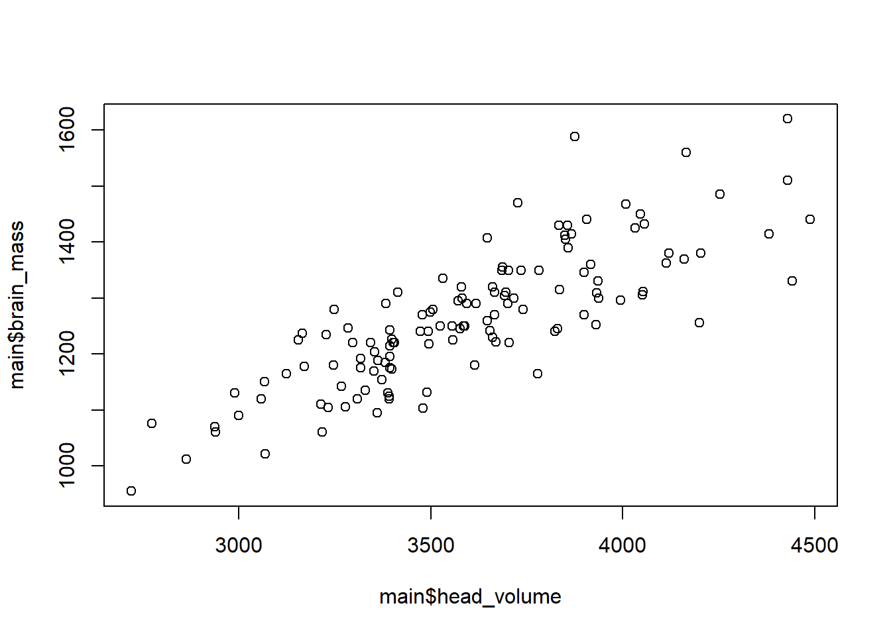
Outliers are data points that are not representative of the majority of the data and so we want to identify them and remove them if they exist because their presence can skew analysis results. A boxplot is a good way to visually check. The outliers will appear as individual data points outside the quartile lines of the plot.
#check outliers of each variable of interest
boxplot(main$head_volume)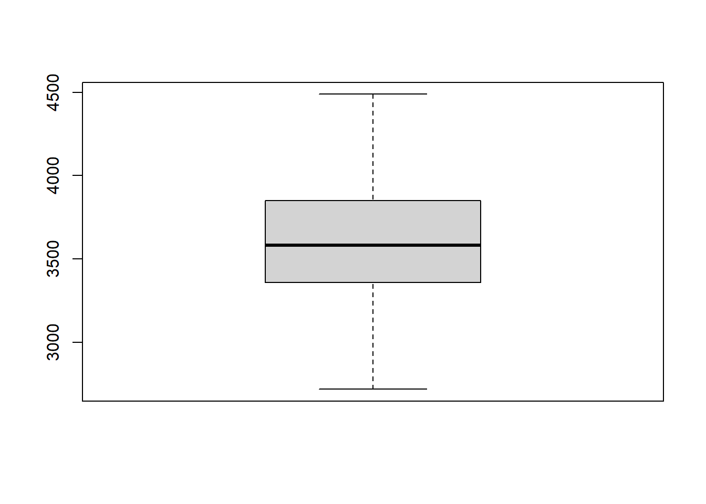
boxplot(main$brain_mass)
We can use the boxplot analysis to find the outliers and then we can get the index of those values to remove them.
#remove outliers
#remove rows where brain_mass is equal to 1588 and 1620
#identify the outliers
boxplot(main$brain_mass)$out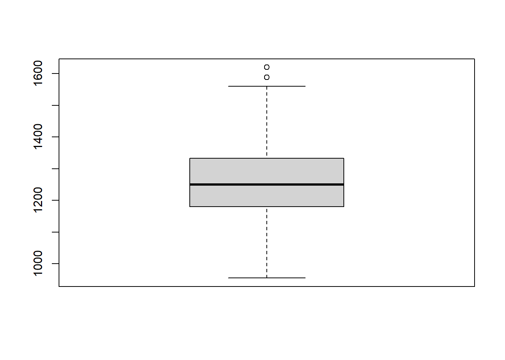
[1] 1588 1620#get index of the row where the brain_mass is equal to the outlier values
row_index <- which(main$brain_mass == 1588 | main$brain_mass == 1620)
#filter out the rows with the targeted indices
main <- main %>% filter(!row_number() %in% row_index)
#preview (note row count is 125 now instead of 127)
main# A tibble: 125 × 4
gender age_range head_volume brain_mass
<fct> <fct> <dbl> <dbl>
1 1 2 4166 1560
2 1 2 3935 1330
3 1 2 3669 1222
4 1 2 3866 1415
5 1 2 3393 1175
6 1 2 4442 1330
7 1 2 4253 1485
8 1 2 3727 1470
9 1 2 3329 1135
10 1 2 3415 1310
# ℹ 115 more rowsPart 2: Linear Model
Now let’s build the linear model.
#create a linear model
lm <- lm(brain_mass~head_volume, data = main)Check the summary of the model next. This information tells you about the linearity of the relationship and the amount of variance your input variable explains in your output variable.
summary(lm)
Call:
lm(formula = brain_mass ~ head_volume, data = main)
Residuals:
Min 1Q Median 3Q Max
-162.549 -47.537 2.503 41.314 175.426
Coefficients:
Estimate Std. Error t value Pr(>|t|)
(Intercept) 317.71139 58.62838 5.419 3.03e-07 ***
head_volume 0.26210 0.01625 16.125 < 2e-16 ***
---
Signif. codes: 0 '***' 0.001 '**' 0.01 '*' 0.05 '.' 0.1 ' ' 1
Residual standard error: 64.77 on 123 degrees of freedom
Multiple R-squared: 0.6789, Adjusted R-squared: 0.6763
F-statistic: 260 on 1 and 123 DF, p-value: < 2.2e-16We can check for linearity by examining the r-squared value.
#check the fit
r2 = round(summary(lm)$r.squared*100, 2)
cat("This model explains approximately", r2, "percent of the variation in brain weight due to head volume.")This model explains approximately 67.89 percent of the variation in brain weight due to head volume.Now we can check for homoscedasticity or the same variance by looking at the residuals plot. These dots should be scattered evenly above and below the middle horizontal region.
#quality check: residuals
#should be random/scattered
plot(fitted(lm), resid(lm))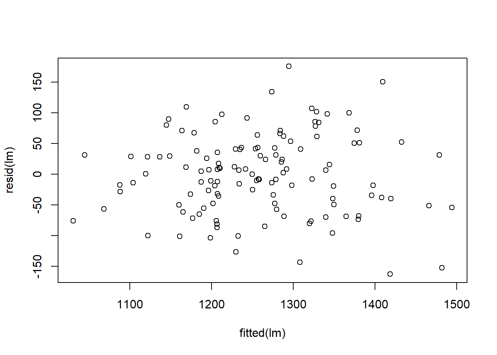
Another good idea is to look at the qq plot which is a visual test of normality. Most of the dots should lie on the line.
#quality check: qq plots
#data should lie mostly close to or on the line
qqnorm(resid(lm))
qqline(resid(lm))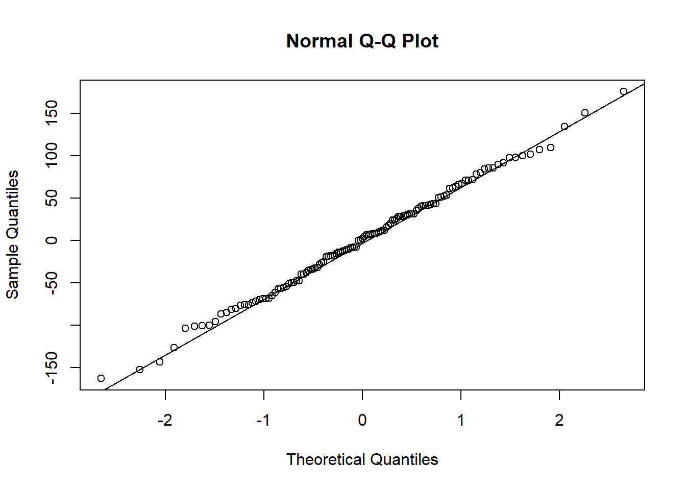
Another normality verification can be done by examining the density plot of the residuals. The result should look like a normal distribution.
#quality check: density plot
#curve should approximate a normal distribution
plot(density(resid(lm)))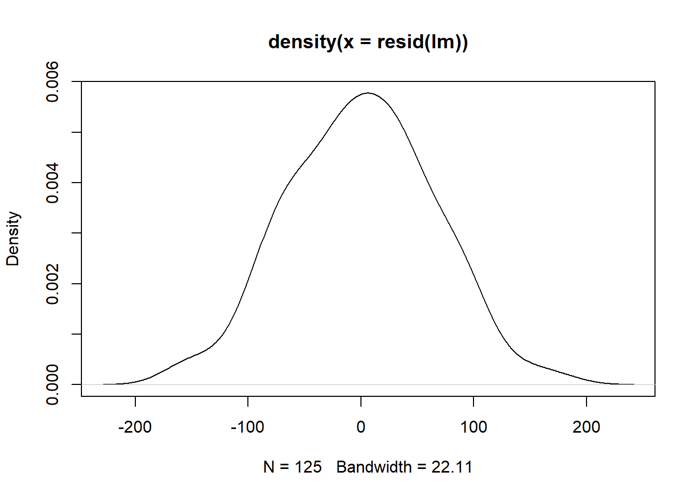
Now we can plot the data with the prediction line which is the line that minimizes the residuals across all of the data points.
#plot the data with the line of best fit
plot(main$head_volume,main$brain_mass)
abline(lm, col = "#0000ff")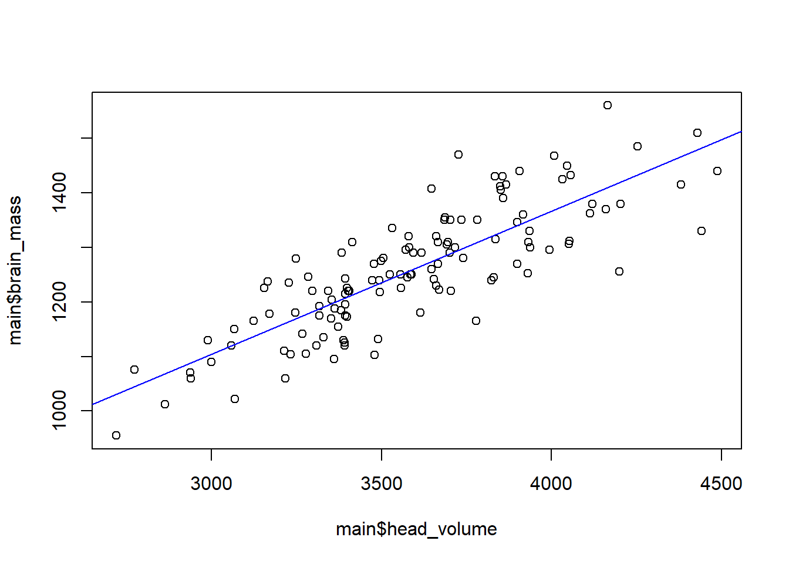
To get the equation of the model, we need to get the coefficients out of the model itself. Some text manipulation allows us to create a nice compact equation in a familiar form.
#print the model equation
cf<-lm$coefficients
lm_equation <- paste("y =",
paste(round(cf[1],2),
paste(round(cf[-1],2),
"x",
sep="",
collapse=" + "),
sep=" + ")
)
lm_equation[1] "y = 317.71 + 0.26x"We can try out our new model by predicting some outputs (brain mass) with some given inputs (head volume).
new_head_volume = tibble(head_volume = c(3216, 3375, 4408))
predict(lm, new_head_volume) 1 2 3
1160.639 1202.313 1473.067 Part 3: Improved Data Visualization
For this section, our goal is to improve the standard plots so they can be published in a presentation. We want them to look nice, be easy to read, and be easy to interpret. For this, we’ll use the ggplot2 library which offers many advantages over base-R graphics.
Preview plot
This is where we started using base-R graphics.
plot(main$head_volume,main$brain_mass)
abline(lm, col = "#0000ff")
Scatterplot with ggplot2
Here’s the same plot with ggpplot2.
ggplot(main, aes(x=head_volume, y=brain_mass))+
geom_point()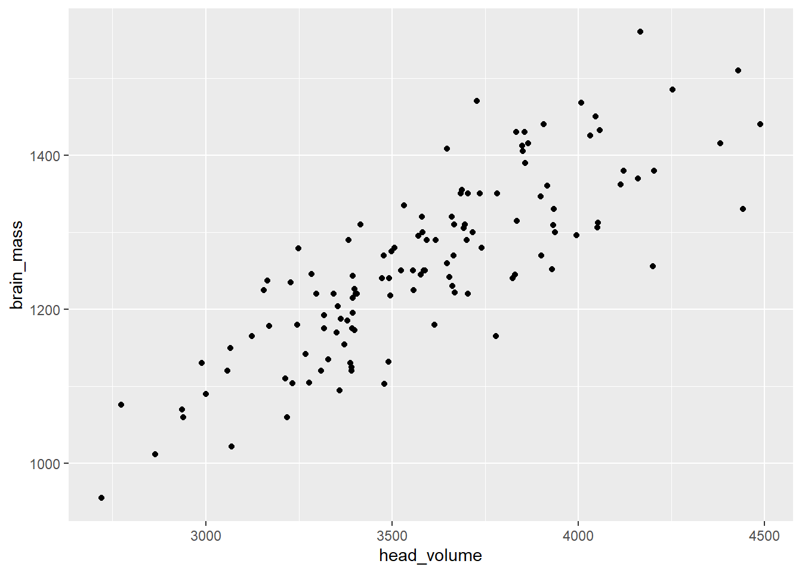
Use a minimal theme
A minimalist approach lightens the visual weight of the chart.
ggplot(main, aes(x=head_volume, y=brain_mass))+
geom_point()+
theme_minimal()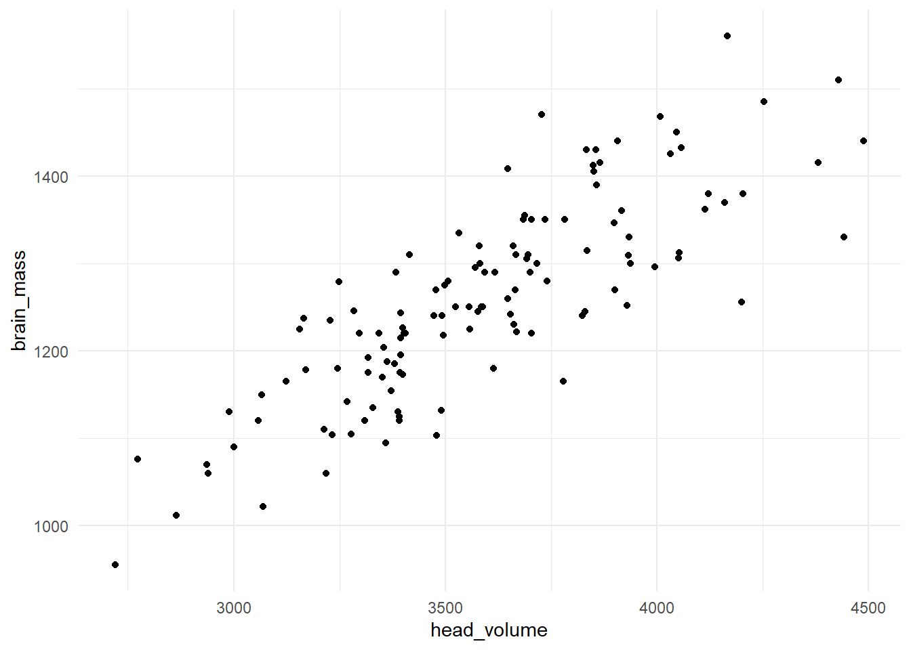
Remove the grid lines
Grid lines can be distracting and not always necessary so removing them reduces visual clutter and brings more focus to the data points.
ggplot(main, aes(x=head_volume, y=brain_mass))+
geom_point()+
theme_minimal()+
theme(panel.grid.major = element_blank(),
panel.grid.minor = element_blank())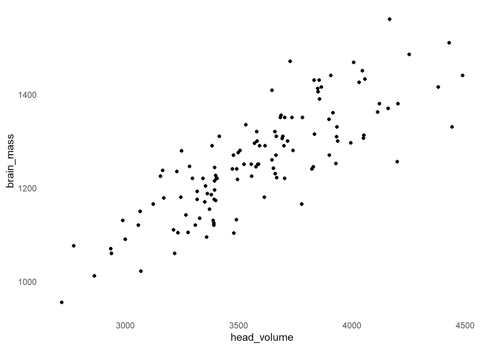
Adjust the axes
Axes should be properly scaled and adjusted to fit the data ranges.
ggplot(main, aes(x=head_volume, y=brain_mass))+
geom_point()+
scale_x_continuous(limits = c(2700, 4500),
breaks = seq(from = 2700, to = 4500, by = 200))+
scale_y_continuous(limits = c(800, 1600),
breaks = seq(from = 800, to = 1600, by = 200))+
theme_minimal()+
theme(panel.grid.major = element_blank(),
panel.grid.minor = element_blank())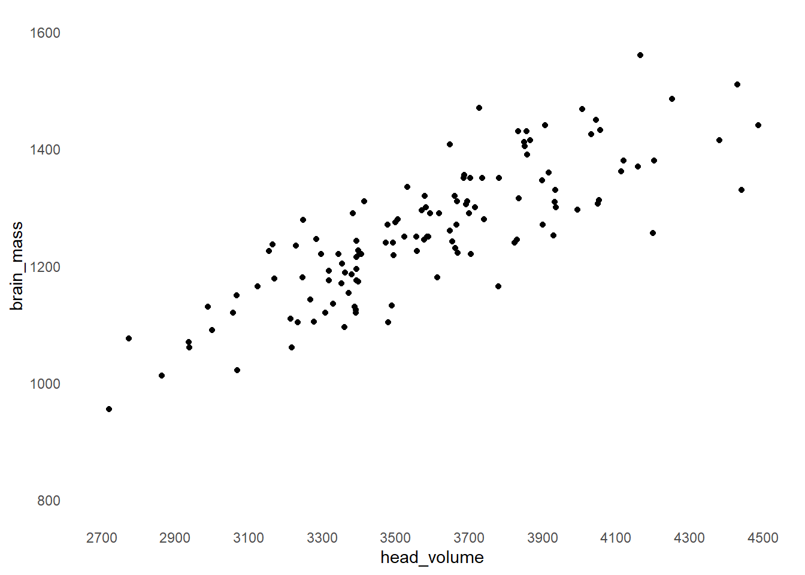
Relabel and resize the axes, titles, and caption.
Axes should be labeled appropriately to improve accuracy and understanding. A caption is a good place to cite work if needed.
ggplot(main, aes(x=head_volume, y=brain_mass))+
geom_point()+
scale_x_continuous(limits = c(2700, 4500),
breaks = seq(from = 2700, to = 4500, by = 200))+
scale_y_continuous(limits = c(800, 1600),
breaks = seq(from = 800, to = 1600, by = 200))+
labs(title = "Brain mass vs. head volume",
subtitle = "Humans, under 18 years",
x = bquote("Head Volume "(cm^3)),
y = "Brain Mass (g)",
caption = "Data source: Hartmann et al. (1994)")+
theme_minimal()+
theme(panel.grid.major = element_blank(),
panel.grid.minor = element_blank(),
plot.title = element_text(size=16),
plot.subtitle = element_text(size=12),
axis.text = element_text(size=12),
axis.title = element_text(size=14))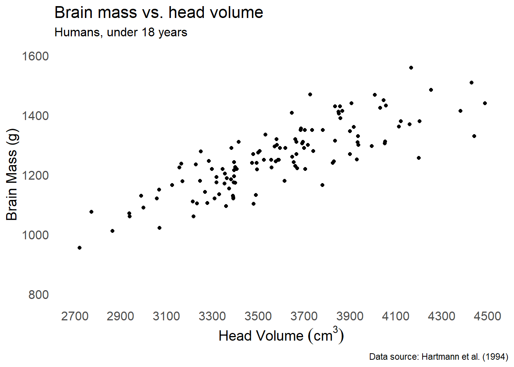
Add the model line and style the points
A strong style improves visual impact and clarity. Choose colors that are easily visible and fit the intended theme if you are following style guidelines.
ggplot(main, aes(x=head_volume, y=brain_mass))+
geom_point(color="#888888")+
geom_smooth(method="lm", se=FALSE, color="#ff3300")+
scale_x_continuous(limits = c(2700, 4500),
breaks = seq(from = 2700, to = 4500, by = 200))+
scale_y_continuous(limits = c(800, 1600),
breaks = seq(from = 800, to = 1600, by = 200))+
labs(title = "Brain mass vs. head volume",
subtitle = "Humans, under 18 years",
x = bquote("Head Volume "(cm^3)),
y = "Brain Mass (g)",
caption = "Data source: Kaggle.com")+
theme_minimal()+
theme(panel.grid.major = element_blank(),
panel.grid.minor = element_blank(),
plot.title = element_text(size=16),
plot.subtitle = element_text(size=12),
axis.text = element_text(size=12),
axis.title = element_text(size=14))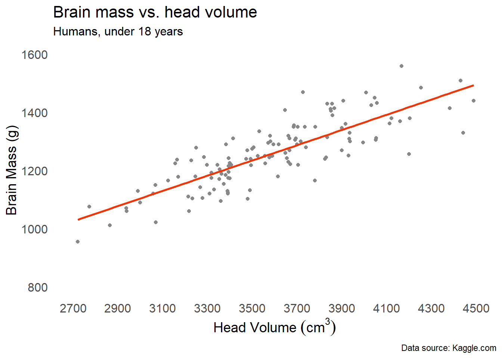
Adjust the aspect ratio
Easily overlooked, adjusting the aspect ratio of your plot can improve visual appeal and layout. You may need to re-scale the axes depending on how you set the aspect ratio.
ggplot(main, aes(x=head_volume, y=brain_mass))+
geom_point(color="#888888")+
geom_smooth(method="lm", se=FALSE, color="#ff3300")+
scale_x_continuous(limits = c(2700, 4500),
breaks = seq(from = 2700, to = 4500, by = 200))+
scale_y_continuous(limits = c(800, 1600),
breaks = seq(from = 800, to = 1600, by = 200))+
labs(title = "Brain mass vs. head volume",
subtitle = "Humans, under 18 years",
x = bquote("Head Volume "(cm^3)),
y = "Brain Mass (g)",
caption = "Data source: Kaggle.com")+
theme_minimal()+
theme(panel.grid.major = element_blank(),
panel.grid.minor = element_blank(),
plot.title = element_text(size=16),
plot.subtitle = element_text(size=12),
axis.text = element_text(size=12),
axis.title = element_text(size=14),
aspect.ratio=0.3)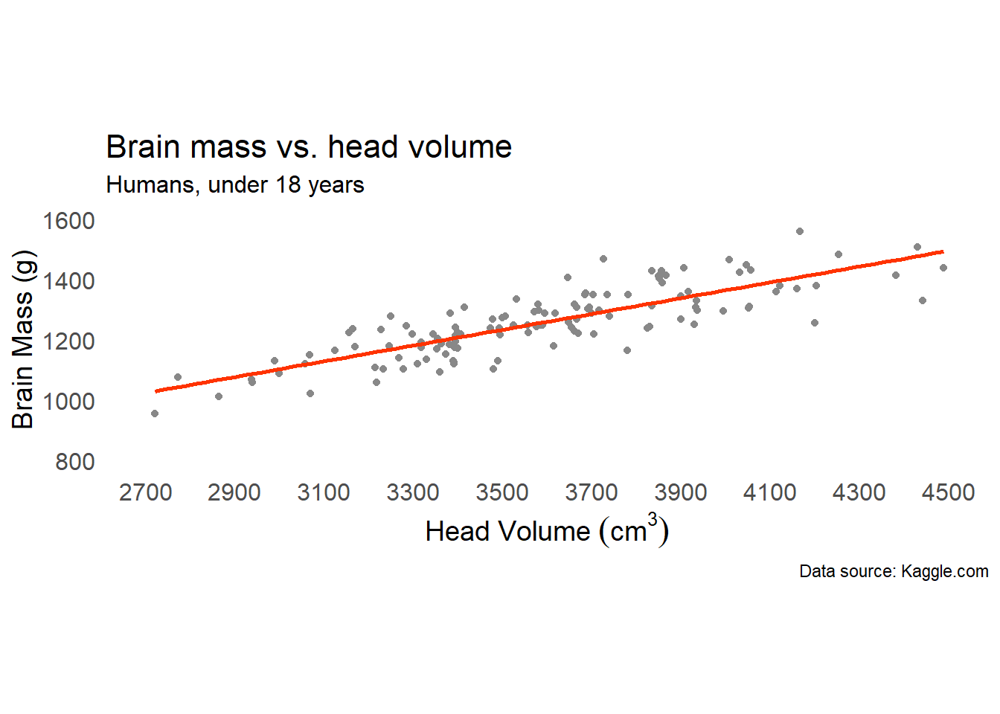
Add the model
The equation for the model itself can be useful for discussion.
ggplot(main, aes(x=head_volume, y=brain_mass))+
geom_point(color="#888888")+
geom_smooth(method="lm", se=FALSE, color="#ff3300")+
scale_x_continuous(limits = c(2700, 4500),
breaks = seq(from = 2700, to = 4500, by = 200))+
scale_y_continuous(limits = c(800, 1600),
breaks = seq(from = 800, to = 1600, by = 200))+
labs(title = "Brain mass vs. head volume",
subtitle = "Humans, under 18 years",
x = bquote("Head Volume "(cm^3)),
y = "Brain Mass (g)",
caption = "Data source: Kaggle.com")+
theme_minimal()+
theme(panel.grid.major = element_blank(),
panel.grid.minor = element_blank(),
plot.title = element_text(size=16),
plot.subtitle = element_text(size=12),
axis.text = element_text(size=12),
axis.title = element_text(size=14),
aspect.ratio=0.3)+
annotate(geom="text", x=4100, y=900, color="#000000", hjust=0, label=lm_equation)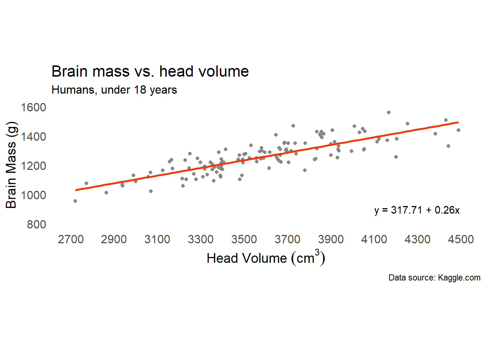